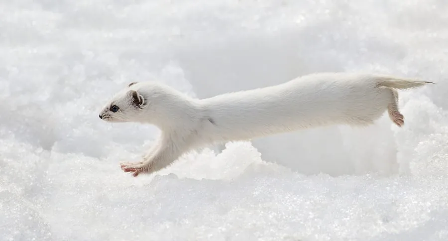

哺乳动物 · 动物界
伶鼬 Mustela nivalis

世界上最小的食肉目动物之一，体重常不足百克，身长十几厘米，却敢捕杀比自己更重的田鼠，分布于北半球广大地区。
- 分类
- 门脊索动物门纲哺乳纲目食肉目科鼬科属鼬属
- 栖息环境
- 草原、农田、林缘、灌丛、苔原与村落附近的草地
- 地理分布
- 欧亚大陆大部、北美洲北部，北非局部也有分布
- 保护级别
- IUCN 无危（LC）；中国境内属受保护野生动物
物种志
伶鼬是现存体型最小的食肉目之一，成年体长仅 13–25 厘米，尾长 2–5 厘米，体重 30–250 克，雄性约为雌性的两倍。身体极度细长，头小吻尖，耳极小，四肢短，毛色夏季背部棕褐、腹面白色，北方种群冬季几乎全白（尾尖通常仍为褐色）。足底有毛，趾间略具蹼膜。
它们广布于欧亚大陆与北美洲的草原、农田、林缘、苔原与村落附近，常利用田鼠的洞道穿行，几乎不自己掘洞。代谢率极高，每天需进食相当于体重一半以上的食物，猎物以田鼠、旅鼠为主，也捕食鼩鼱、小鸟、蛙与昆虫。猎杀时反复跳跃、紧咬后颈，即使猎物比自己更重也能制伏。繁殖能力强，孕期约 34–37 天，每年可产 2–3 胎，每胎 3–9 仔。种群随鼠类数量周期性波动。
形态与习性
- 体长约 13–25 cm，尾长仅 2–5 cm
- 体重约 30–250 g，雄性明显大于雌性
- 食性田鼠、旅鼠为主，兼食鼩鼱、小鸟、蛙与昆虫
- 繁殖孕期约 34–37 天，每年 2–3 胎，每胎 3–9 仔
- 代谢每日需进食约体重一半以上的食物，进食间隔很短
- 毛色变化北方种群冬季变白，南方种群多保持棕褐色
- 寿命野外通常不足 2 年
趣味知识
- 一只伶鼬的体重往往只有一枚鸡蛋到几十枚鸡蛋之间，却敢攻击比它大一倍的田鼠。
- 它几乎不挖洞，而是直接钻进田鼠的现成洞道里追击。
- 因为代谢太快，伶鼬每天要吃下接近自身体重一半的食物。